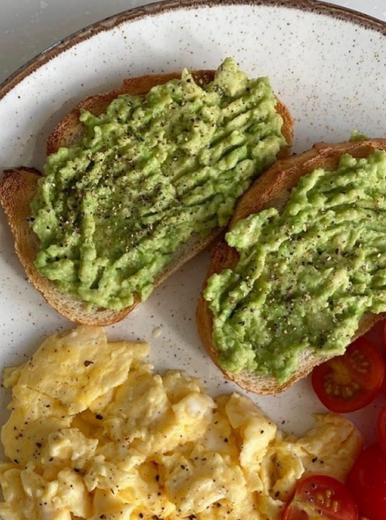

Healthy meatballs: Are you ready to try a typical Greek food? In Greece they are called “keftedakia” a small translation these are meatballs a very famous plate and very tasty! They
are small, round balls of ground meat usually beef or
pork, mixed with breadcrumbs, eggs and seasonings.
Greek Salad
Greek Salad: What about another Greek food? “Horiatiki salata” is
another typical Greek food which refers to “Greek
salad”. It is a fresh and healthy dish made with
tomatoes, cucumber, onions, olives and feta cheese.
It is usually dressed with olive oil, lemon or herbs.
Avocado Toast

Avocado toast: Avocado toast is a simple and healthy meal made by
spreading mashed avocado on toasted bread. It is
often topped with salt, pepper and a squeezed lemon.
You can add extras like eggs. tomatoes or cheese for
more flavor!
Steak
Steak A good steak is all about the perfect balance crispy on the outside, juicy and tender on the inside. Choose a high-quality cut, season with salt and pepper, and cook it to your preferred doneness. Whether it’s a rich ribeye or a lean filet mignon, the result should be a flavorful, satisfying meal that leaves you craving more.